26.1
#ifndef GIT_INFO_H_INCLUDED #define GIT_INFO_H_INCLUDED #define GIT_COMMIT_HASH "354eeb278" #define GIT_COMMIT_AUTHOR "Hans Jørgen Aagaard Jensen" #define GIT_COMMIT_DATE "Thu Apr 16 20:11:24 2026 +0000" #define GIT_BRANCH "HEAD" #endif /* GIT_INFO_H_INCLUDED */
GCCcore/15.2.0 zlib/2.3.2-GCCcore-15.2.0 binutils/2.45-GCCcore-15.2.0 bzip2/1.0.8-GCCcore-15.2.0 ncurses/6.6-GCCcore-15.2.0 libreadline/8.3-GCCcore-15.2.0 libtommath/1.3.0-GCCcore-15.2.0 Tcl/9.0.3-GCCcore-15.2.0 SQLite/3.51.1-GCCcore-15.2.0 XZ/5.8.2-GCCcore-15.2.0 libffi/3.5.2-GCCcore-15.2.0 OpenSSL/3 gzip/1.14-GCCcore-15.2.0 lz4/1.10.0-GCCcore-15.2.0 zstd/1.5.7-GCCcore-15.2.0 Python/3.14.2-GCCcore-15.2.0 libidn2/2.3.8-GCCcore-15.2.0 libiconv/1.18-GCCcore-15.2.0 libunistring/1.4.1-GCCcore-15.2.0 libpsl/0.21.5-GCCcore-15.2.0 cURL/8.17.0-GCCcore-15.2.0 libxml2/2.15.1-GCCcore-15.2.0 libarchive/3.8.5-GCCcore-15.2.0 CMake/4.2.1-GCCcore-15.2.0 intel-compilers/2025.3.3 numactl/2.0.19-GCCcore-15.2.0 UCX/1.20.0-GCCcore-15.2.0 impi/2021.17.2-intel-compilers-2025.3.3 imkl/2025.3.1 iimpi/2026.1 imkl-FFTW/2025.3.1-iimpi-2026.1 intel/2026.1 libaec/1.1.7-GCCcore-15.2.0 Perl/5.42.0-GCCcore-15.2.0 HDF5/2.1.1-iimpi-2026.1
# Build intel-mpi-int32 of the DIRAC performance tests (.gitlab-performance/builds.sh) # Reproduce it, compiling and running the tests: .gitlab-performance/run_local.sh intel-mpi-int32 (image intel.sif) # Reference EasyBuild easyconfig: https://github.com/easybuilders/easybuild-easyconfigs/blob/develop/easybuild/easyconfigs/d/DIRAC/DIRAC-26.0-intel-2025a.eb (CMake options; toolchain intel/2026.1 instead of intel/2025a) module load Python/3.14.2-GCCcore-15.2.0 CMake/4.2.1-GCCcore-15.2.0 intel/2026.1 HDF5/2.1.1-iimpi-2026.1 export CC=mpiicx CXX=mpiicpx FC=mpiifx CFLAGS='-O3 -xHost' CXXFLAGS='-O3 -xHost' FFLAGS='-O3 -xHost' cmake -S . -B build-intel-mpi-int32 -DCMAKE_BUILD_TYPE=Release -DENABLE_PELIB=False -DMKL_FLAG=parallel -DENABLE_MPI=True -DENABLE_EXATENSOR=False cmake --build build-intel-mpi-int32 -j $(nproc)
-- CFLAGS is set to '-O3 -xHost'. -- CXXFLAGS is set to '-O3 -xHost'. -- User set explicit MKL flag which is passed to the compiler and linker: -qmkl=parallel -- This disables math detection and builtin math libraries -- Setting -DHAVE_MKL_BLAS and -DHAVE_MKL_LAPACK -- Enable profiling: OFF -- Enable run-time checking: OFF -- Configure-time Linked math libs integer compatibility test ENABLED -- Performing compile and run test of blas integer size (can deactivate with -D ENABLE_MATH_INT_TEST=OFF) -- Test of blas integer size SUCCESS .. blas is integer*4 -- We have BLAS-integer*4 -- Found HDF5: hdf5-shared (found version "2.1.1") found components: C -- HFD5 found, enabling HDF5 interface -- HDF5 include directory location: /opt/eb-intel/software/HDF5/2.1.1-iimpi-2026.1/include -- MPI package type: INTEL -- Compiling /homeu/juanau/dirac-performance/.dirac-perf-src/354eeb278/cmake/custom/test-MPI-compiler-compatibility.F90 ... -- mpi.mod matches the current MPI compiler, employing 'use mpi' and setting -DUSE_MPI_MOD_F90 -- Compiling /homeu/juanau/dirac-performance/.dirac-perf-src/354eeb278/cmake/custom/test-MPI-itype-compatibility.F90 ... -- Well, program got compiled with 32-bit integers, but the internal MPI integer compatibility test will be performed inside dirac.x. -- Set CDash default timeout for single test set to 1500 seconds. Overwritten by test's TIMEOUT property label and, ultimatively, by pam timeout setting. -- Test's 'basis_input_scripted' timeout set to 3600 seconds. Can be overwritten by pam's timeout setting. -- -qmkl=... flag for MKL libraries kept because Intel Fortran compiler is present -- Polarizable Continuum Model via PCMSolver DISABLED -- Enable ExaTENSOR library: False -- NOTE: tests for the (e)amfX2C 2e-scalar and spin-orbit picture-change correction module require h5py in your python env! -- (e)amfX2C 2e-scalar and spin-orbit picture-change correction module: ON -- The XCFun submodule ENABLED -- ESR property module: ON -- Stieltjes external module DISABLED -- KRCC module: ON -- Enable compilation of standalone relccsd.x: OFF -- OpenRSP library: OFF -- LAO properties without connection matrices: ON -- Spinfree MCSCF module: ON -- srDFT module: ON -- Specialized tutorial tests DISABLED -- Unit control tests DISABLED -- Found HDF5: hdf5-shared (found version "2.1.1") found components: C HL -- User name: juanau -- Host name: nn6 -- Operating system: Linux-5.14.0-687.10.1.el9_8.0.1.x86_64 -- CMake version: 4.2.1 -- CMake generator: Unix Makefiles -- CMake build type: Release -- Configuration time: 2026-11-15 17:25:25.948753+00:00 -- Fortran compiler ID: IntelLLVM -- Fortran compiler: /opt/eb-intel/software/impi/2021.17.2-intel-compilers-2025.3.3/mpi/2021.17/bin/mpiifx -- Fortran compiler version: IntelLLVM 2025.3.3 -- Fortran compiler flags: -O3 -xHost -w -assume byterecl -g -traceback -DVAR_IFX -w -assume byterecl -g -traceback -DVAR_IFX -- C compiler ID: IntelLLVM -- C compiler: /opt/eb-intel/software/impi/2021.17.2-intel-compilers-2025.3.3/mpi/2021.17/bin/mpiicx -- C compiler version: IntelLLVM 2025.3.3 -- C compiler flags: -O3 -xHost -g -- CXX compiler ID: IntelLLVM -- CXX compiler: /opt/eb-intel/software/impi/2021.17.2-intel-compilers-2025.3.3/mpi/2021.17/bin/mpiicpx -- CXX compiler version: IntelLLVM 2025.3.3 -- CXX compiler flags: -O3 -xHost -Wno-unknown-pragmas -- Static linking: OFF -- 64-bit integers: OFF -- MPI parallelization: True -- MPI launcher: /opt/eb-intel/software/impi/2021.17.2-intel-compilers-2025.3.3/mpi/2021.17/bin/mpiexec -- Intel MKL flag: parallel -- Compile definitions: HAVE_MKL_BLAS;HAVE_MKL_LAPACK;HAVE_MPI;VAR_MPI;VAR_MPI2;USE_MPI_MOD_F90;SYS_LINUX;PRG_DIRAC;INSTALL_WRKMEM=64000000;BUILD_GEN1INT;MOD_LAO_REARRANGED;MOD_MCSCF_spinfree;MOD_XAMFI;MOD_ESR;MOD_KRCC;MOD_SRDFT -- Exacorr module enabled : False -- For checking, linked libraries to dirac.x: diracobj;xcfun_fortran_bindings;/homeu/juanau/dirac-performance/.dirac-perf-src/354eeb278/build-intel-mpi-int32/external/xcfun-build/src/libxcfun.a;gen1int_interface;laplace;laplace-minimax;qcorr;HDF5::HDF5 -- Could NOT find Sphinx (missing: SPHINX_EXECUTABLE) -- Copied DIRAC basis set directories into the build directory -- Copied data schema and python utilities into the build directory -- Set CDash default timeout for single test set to 1500 seconds. Overwritten by test's TIMEOUT property label and, ultimatively, by pam timeout setting. -- Test's 'basis_input_scripted' timeout set to 3600 seconds. Can be overwritten by pam's timeout setting. -- Configuring done (17.4s) -- Generating done (13.5s) -- Build files have been written to: /homeu/juanau/dirac-performance/.dirac-perf-src/354eeb278/build-intel-mpi-int32
#ifndef BUILD_INFO_H_INCLUDED #define BUILD_INFO_H_INCLUDED #define USER_NAME "juanau" #define HOST_NAME "nn6" #define SYSTEM "Linux-5.14.0-687.10.1.el9_8.0.1.x86_64" #define CMAKE_VERSION "4.2.1" #define CMAKE_GENERATOR "Unix Makefiles" #define CMAKE_BUILD_TYPE "Release" #define CONFIGURATION_TIME "2026-11-15 17:25:25.948753+00:00" #define FORTRAN_COMPILER_ID "IntelLLVM" #define FORTRAN_COMPILER "/opt/eb-intel/software/impi/2021.17.2-intel-compilers-2025.3.3/mpi/2021.17/bin/mpiifx" #define FORTRAN_COMPILER_VERSION "2025.3.3" #define FORTRAN_COMPILER_FLAGS "-O3 -xHost -w -assume byterecl -g -traceback -DVAR_IFX -w -assume byterecl -g -traceback -DVAR_IFX " #define C_COMPILER_ID "IntelLLVM" #define C_COMPILER "/opt/eb-intel/software/impi/2021.17.2-intel-compilers-2025.3.3/mpi/2021.17/bin/mpiicx" #define C_COMPILER_VERSION "2025.3.3" #define C_COMPILER_FLAGS "-O3 -xHost -g " #define CXX_COMPILER_ID "IntelLLVM" #define CXX_COMPILER "/opt/eb-intel/software/impi/2021.17.2-intel-compilers-2025.3.3/mpi/2021.17/bin/mpiicpx" #define CXX_COMPILER_VERSION "2025.3.3" #define CXX_COMPILER_FLAGS "-O3 -xHost -Wno-unknown-pragmas " #define STATIC_LINKING "OFF" #define ENABLE_64BIT_INTEGERS "OFF" #define ENABLE_MPI "True" #define MPI_LAUNCHER "/opt/eb-intel/software/impi/2021.17.2-intel-compilers-2025.3.3/mpi/2021.17/bin/mpiexec" #define MATH_LIBS "unknown" #define ENABLE_BUILTIN_BLAS "OFF" #define ENABLE_BUILTIN_LAPACK "OFF" #define EXPLICIT_LIBS "unknown" #define ENABLE_EXATENSOR "False" #define EXATENSOR_REPO "unknown" #define EXATENSOR_CONFIG "unknown" #define EXATENSOR_HASH "unknown" #define DEFINITIONS "HAVE_MKL_BLAS;HAVE_MKL_LAPACK;HAVE_MPI;VAR_MPI;VAR_MPI2;USE_MPI_MOD_F90;SYS_LINUX;PRG_DIRAC;INSTALL_WRKMEM=64000000;BUILD_GEN1INT;MOD_LAO_REARRANGED;MOD_MCSCF_spinfree;MOD_XAMFI;MOD_ESR;MOD_KRCC;MOD_SRDFT" #endif /* BUILD_INFO_H_INCLUDED */
# This is the CMakeCache file.
# For build in directory: /homeu/juanau/dirac-performance/.dirac-perf-src/354eeb278/build-intel-mpi-int32
# It was generated by CMake: /opt/eb/software/CMake/4.2.1-GCCcore-15.2.0/bin/cmake
# You can edit this file to change values found and used by cmake.
# If you do not want to change any of the values, simply exit the editor.
# If you do want to change a value, simply edit, save, and exit the editor.
# The syntax for the file is as follows:
# KEY:TYPE=VALUE
# KEY is the name of a variable in the cache.
# TYPE is a hint to GUIs for the type of VALUE, DO NOT EDIT TYPE!.
# VALUE is the current value for the KEY.
########################
# EXTERNAL cache entries
########################
//BLAS found
BLAS_FOUND:BOOL=TRUE
//Name of build on the dashboard
BUILDNAME:STRING=Linux-x86_64-IntelLLVM--release
//Build the testing tree.
BUILD_TESTING:BOOL=ON
//Path to a program.
CMAKE_ADDR2LINE:FILEPATH=/opt/eb/software/binutils/2.45-GCCcore-15.2.0/bin/addr2line
//Path to a program.
CMAKE_AR:FILEPATH=/opt/eb/software/binutils/2.45-GCCcore-15.2.0/bin/ar
//Choose the type of build, options are: None Debug Release RelWithDebInfo
// MinSizeRel ...
CMAKE_BUILD_TYPE:STRING=Release
//Enable/Disable color output during build.
CMAKE_COLOR_MAKEFILE:BOOL=ON
//CXX compiler
CMAKE_CXX_COMPILER:FILEPATH=/opt/eb-intel/software/impi/2021.17.2-intel-compilers-2025.3.3/mpi/2021.17/bin/mpiicpx
//LLVM archiver
CMAKE_CXX_COMPILER_AR:FILEPATH=CMAKE_CXX_COMPILER_AR-NOTFOUND
//Generate index for LLVM archive
CMAKE_CXX_COMPILER_RANLIB:FILEPATH=CMAKE_CXX_COMPILER_RANLIB-NOTFOUND
//Flags used by the compiler during all builds.
CMAKE_CXX_FLAGS:STRING='-O3 -xHost -Wno-unknown-pragmas '
//Flags used by the compiler during debug builds.
CMAKE_CXX_FLAGS_DEBUG:STRING=-O0 -debug -DDEBUG
//Flags used by the CXX compiler during MINSIZEREL builds.
CMAKE_CXX_FLAGS_MINSIZEREL:STRING=-Os -DNDEBUG
//Flags used by the compiler during release builds.
CMAKE_CXX_FLAGS_RELEASE:STRING=-debug -O3 -DNDEBUG
//Flags used by the CXX compiler during RELWITHDEBINFO builds.
CMAKE_CXX_FLAGS_RELWITHDEBINFO:STRING=-O2 -g -DNDEBUG
//C compiler
CMAKE_C_COMPILER:FILEPATH=/opt/eb-intel/software/impi/2021.17.2-intel-compilers-2025.3.3/mpi/2021.17/bin/mpiicx
//LLVM archiver
CMAKE_C_COMPILER_AR:FILEPATH=CMAKE_C_COMPILER_AR-NOTFOUND
//Generate index for LLVM archive
CMAKE_C_COMPILER_RANLIB:FILEPATH=CMAKE_C_COMPILER_RANLIB-NOTFOUND
//Flags used by the compiler during all builds.
CMAKE_C_FLAGS:STRING='-O3 -xHost -g '
//Flags used by the compiler during debug builds.
CMAKE_C_FLAGS_DEBUG:STRING=-O0
//Flags used by the C compiler during MINSIZEREL builds.
CMAKE_C_FLAGS_MINSIZEREL:STRING=-Os -DNDEBUG
//Flags used by the compiler during release builds.
CMAKE_C_FLAGS_RELEASE:STRING=-O2
//Flags used by the C compiler during RELWITHDEBINFO builds.
CMAKE_C_FLAGS_RELWITHDEBINFO:STRING=-O2 -g -DNDEBUG
//Path to a program.
CMAKE_DLLTOOL:FILEPATH=CMAKE_DLLTOOL-NOTFOUND
//Flags used by the linker during all build types.
CMAKE_EXE_LINKER_FLAGS:STRING=
//Flags used by the linker during DEBUG builds.
CMAKE_EXE_LINKER_FLAGS_DEBUG:STRING=
//Flags used by the linker during MINSIZEREL builds.
CMAKE_EXE_LINKER_FLAGS_MINSIZEREL:STRING=
//Flags used by the linker during RELEASE builds.
CMAKE_EXE_LINKER_FLAGS_RELEASE:STRING=
//Flags used by the linker during RELWITHDEBINFO builds.
CMAKE_EXE_LINKER_FLAGS_RELWITHDEBINFO:STRING=
//Enable/Disable output of compile commands during generation.
CMAKE_EXPORT_COMPILE_COMMANDS:BOOL=
//Value Computed by CMake.
CMAKE_FIND_PACKAGE_REDIRECTS_DIR:STATIC=/homeu/juanau/dirac-performance/.dirac-perf-src/354eeb278/build-intel-mpi-int32/CMakeFiles/pkgRedirects
//Fortran compiler
CMAKE_Fortran_COMPILER:FILEPATH=/opt/eb-intel/software/impi/2021.17.2-intel-compilers-2025.3.3/mpi/2021.17/bin/mpiifx
//LLVM archiver
CMAKE_Fortran_COMPILER_AR:FILEPATH=CMAKE_Fortran_COMPILER_AR-NOTFOUND
//Generate index for LLVM archive
CMAKE_Fortran_COMPILER_RANLIB:FILEPATH=CMAKE_Fortran_COMPILER_RANLIB-NOTFOUND
//Flags used by the compiler during all builds.
CMAKE_Fortran_FLAGS:STRING='-O3 -xHost -w -assume byterecl -g -traceback -DVAR_IFX '
//Flags used by the compiler during debug builds.
CMAKE_Fortran_FLAGS_DEBUG:STRING=-O0
//Flags used by the Fortran compiler during MINSIZEREL builds.
CMAKE_Fortran_FLAGS_MINSIZEREL:STRING=-Os
//Flags used by the compiler during release builds.
CMAKE_Fortran_FLAGS_RELEASE:STRING=-O3
//Flags used by the Fortran compiler during RELWITHDEBINFO builds.
CMAKE_Fortran_FLAGS_RELWITHDEBINFO:STRING=-O2 -g
//Install path prefix, prepended onto install directories.
CMAKE_INSTALL_PREFIX:PATH=/usr/local
//Path to a program.
CMAKE_LINKER:FILEPATH=/opt/eb/software/binutils/2.45-GCCcore-15.2.0/bin/ld
//Path to a program.
CMAKE_MAKE_PROGRAM:FILEPATH=/usr/bin/gmake
//Flags used by the linker during the creation of modules during
// all build types.
CMAKE_MODULE_LINKER_FLAGS:STRING=
//Flags used by the linker during the creation of modules during
// DEBUG builds.
CMAKE_MODULE_LINKER_FLAGS_DEBUG:STRING=
//Flags used by the linker during the creation of modules during
// MINSIZEREL builds.
CMAKE_MODULE_LINKER_FLAGS_MINSIZEREL:STRING=
//Flags used by the linker during the creation of modules during
// RELEASE builds.
CMAKE_MODULE_LINKER_FLAGS_RELEASE:STRING=
//Flags used by the linker during the creation of modules during
// RELWITHDEBINFO builds.
CMAKE_MODULE_LINKER_FLAGS_RELWITHDEBINFO:STRING=
//Path to a program.
CMAKE_NM:FILEPATH=/opt/eb/software/binutils/2.45-GCCcore-15.2.0/bin/nm
//Path to a program.
CMAKE_OBJCOPY:FILEPATH=/opt/eb/software/binutils/2.45-GCCcore-15.2.0/bin/objcopy
//Path to a program.
CMAKE_OBJDUMP:FILEPATH=/opt/eb/software/binutils/2.45-GCCcore-15.2.0/bin/objdump
//Value Computed by CMake
CMAKE_PROJECT_COMPAT_VERSION:STATIC=
//Value Computed by CMake
CMAKE_PROJECT_DESCRIPTION:STATIC=
//Value Computed by CMake
CMAKE_PROJECT_HOMEPAGE_URL:STATIC=
//Value Computed by CMake
CMAKE_PROJECT_NAME:STATIC=DIRAC
//Value Computed by CMake
CMAKE_PROJECT_SPDX_LICENSE:STATIC=
//Path to a program.
CMAKE_RANLIB:FILEPATH=/opt/eb/software/binutils/2.45-GCCcore-15.2.0/bin/ranlib
//Path to a program.
CMAKE_READELF:FILEPATH=/opt/eb/software/binutils/2.45-GCCcore-15.2.0/bin/readelf
//Flags used by the linker during the creation of shared libraries
// during all build types.
CMAKE_SHARED_LINKER_FLAGS:STRING=
//Flags used by the linker during the creation of shared libraries
// during DEBUG builds.
CMAKE_SHARED_LINKER_FLAGS_DEBUG:STRING=
//Flags used by the linker during the creation of shared libraries
// during MINSIZEREL builds.
CMAKE_SHARED_LINKER_FLAGS_MINSIZEREL:STRING=
//Flags used by the linker during the creation of shared libraries
// during RELEASE builds.
CMAKE_SHARED_LINKER_FLAGS_RELEASE:STRING=
//Flags used by the linker during the creation of shared libraries
// during RELWITHDEBINFO builds.
CMAKE_SHARED_LINKER_FLAGS_RELWITHDEBINFO:STRING=
//If set, runtime paths are not added when installing shared libraries,
// but are added when building.
CMAKE_SKIP_INSTALL_RPATH:BOOL=NO
//If set, runtime paths are not added when using shared libraries.
CMAKE_SKIP_RPATH:BOOL=NO
//Flags used by the archiver during the creation of static libraries
// during all build types.
CMAKE_STATIC_LINKER_FLAGS:STRING=
//Flags used by the archiver during the creation of static libraries
// during DEBUG builds.
CMAKE_STATIC_LINKER_FLAGS_DEBUG:STRING=
//Flags used by the archiver during the creation of static libraries
// during MINSIZEREL builds.
CMAKE_STATIC_LINKER_FLAGS_MINSIZEREL:STRING=
//Flags used by the archiver during the creation of static libraries
// during RELEASE builds.
CMAKE_STATIC_LINKER_FLAGS_RELEASE:STRING=
//Flags used by the archiver during the creation of static libraries
// during RELWITHDEBINFO builds.
CMAKE_STATIC_LINKER_FLAGS_RELWITHDEBINFO:STRING=
//Path to a program.
CMAKE_STRIP:FILEPATH=/opt/eb/software/binutils/2.45-GCCcore-15.2.0/bin/strip
//Path to a program.
CMAKE_TAPI:FILEPATH=CMAKE_TAPI-NOTFOUND
//If this value is on, makefiles will be generated without the
// .SILENT directive, and all commands will be echoed to the console
// during the make. This is useful for debugging only. With Visual
// Studio IDE projects all commands are done without /nologo.
CMAKE_VERBOSE_MAKEFILE:BOOL=FALSE
//Path to the coverage program that CTest uses for performing coverage
// inspection
COVERAGE_COMMAND:FILEPATH=/opt/eb/software/GCCcore/15.2.0/bin/gcov
//Extra command line flags to pass to the coverage tool
COVERAGE_EXTRA_FLAGS:STRING=-l
//How many times to retry timed-out CTest submissions.
CTEST_SUBMIT_RETRY_COUNT:STRING=3
//How long to wait between timed-out CTest submissions.
CTEST_SUBMIT_RETRY_DELAY:STRING=5
//Set timeout in seconds for every single test
DART_TESTING_TIMEOUT:STRING=1500
//Value Computed by CMake
DIRAC_BINARY_DIR:STATIC=/homeu/juanau/dirac-performance/.dirac-perf-src/354eeb278/build-intel-mpi-int32
//Value Computed by CMake
DIRAC_IS_TOP_LEVEL:STATIC=ON
//Value Computed by CMake
DIRAC_SOURCE_DIR:STATIC=/homeu/juanau/dirac-performance/.dirac-perf-src/354eeb278
//Dot tool for use with Doxygen
DOXYGEN_DOT_EXECUTABLE:FILEPATH=DOXYGEN_DOT_EXECUTABLE-NOTFOUND
//Doxygen documentation generation tool (https://www.doxygen.nl)
DOXYGEN_EXECUTABLE:FILEPATH=DOXYGEN_EXECUTABLE-NOTFOUND
//Enable 64-bit integers
ENABLE_64BIT_INTEGERS:BOOL=OFF
//Enable builtin BLAS implementation (slow)
ENABLE_BUILTIN_BLAS:BOOL=OFF
//Enable builtin LAPACK implementation (slow)
ENABLE_BUILTIN_LAPACK:BOOL=OFF
//Enable code coverage
ENABLE_CODE_COVERAGE:BOOL=OFF
//ESR property module
ENABLE_ESR:BOOL=ON
//Enable ExaTENSOR library
ENABLE_EXATENSOR:BOOL=False
//Enable Gen1Int library
ENABLE_GEN1INT:BOOL=ON
//Enable HDF5
ENABLE_HDF5:BOOL=ON
//KRCC module
ENABLE_KRCC:BOOL=ON
//LAO properties without connection matrices
ENABLE_LAO_REARRANGED:BOOL=ON
//Enable LAPACK diagonalization of real matrices
ENABLE_LAPACK_QDIAG:BOOL=OFF
//Enable checking of math libs integer size compatibility
ENABLE_MATH_INT_TEST:BOOL=ON
//Log interesting matrices in matlab format (very verbose!)
ENABLE_MATLAB_LOG:BOOL=OFF
//Spinfree MCSCF module
ENABLE_MCSCF_spinfree:BOOL=ON
//Enable MPI parallelization
ENABLE_MPI:BOOL=True
//Enable static linking with older linkers
ENABLE_OLD_LINKER:BOOL=OFF
//Enable OpenMP parallelization
ENABLE_OPENMP:BOOL=OFF
//Enable OpenRSP
ENABLE_OPENRSP:BOOL=OFF
//Enable Polarizable Continuum Model through PCMSolver
ENABLE_PCMSOLVER:BOOL=OFF
//Enable polarizabile embedding library
ENABLE_PELIB:BOOL=False
//Enable polarizabile density embedding library
ENABLE_PELIB_PDE:BOOL=ON
//Enable profiling
ENABLE_PROFILING:BOOL=OFF
//Enable standalone RELCCSD
ENABLE_RELCCSD_STANDALONE:BOOL=OFF
//Enable run-time checking
ENABLE_RUNTIMECHECK:BOOL=OFF
//srDFT module
ENABLE_SRDFT:BOOL=ON
//Enable static libraries linking
ENABLE_STATIC_LINKING:BOOL=OFF
//Enable stieltjes library
ENABLE_STIELTJES:BOOL=OFF
//Enable tutorials within the test suite
ENABLE_TUTORIALS:BOOL=OFF
//Enable unit tests
ENABLE_UNIT_TESTS:BOOL=OFF
//Enable utilities
ENABLE_UTILITIES:BOOL=ON
//(e)amf 2-electron scalar and spin-orbit picture-change correction
// module
ENABLE_XAMFI:BOOL=ON
//Enable XCFun library
ENABLE_XCFUN:BOOL=ON
//Path to a program.
GITCOMMAND:FILEPATH=/usr/bin/git
//Value Computed by CMake
Gen1Int_BINARY_DIR:STATIC=/homeu/juanau/dirac-performance/.dirac-perf-src/354eeb278/build-intel-mpi-int32/src/gen1int/subtree
//Value Computed by CMake
Gen1Int_IS_TOP_LEVEL:STATIC=OFF
//Value Computed by CMake
Gen1Int_SOURCE_DIR:STATIC=/homeu/juanau/dirac-performance/.dirac-perf-src/354eeb278/src/gen1int/subtree
//HDF5 file differencing tool.
HDF5_DIFF_EXECUTABLE:FILEPATH=/opt/eb-intel/software/HDF5/2.1.1-iimpi-2026.1/bin/h5diff
//The directory containing a CMake configuration file for HDF5.
HDF5_DIR:PATH=/opt/eb-intel/software/HDF5/2.1.1-iimpi-2026.1/cmake
//LAPACK found
LAPACK_FOUND:BOOL=TRUE
//Command to build the project
MAKECOMMAND:STRING=/opt/eb/software/CMake/4.2.1-GCCcore-15.2.0/bin/cmake --build . --config "${CTEST_CONFIGURATION_TYPE}"
//Math libraries
MATH_LIBS:STRING=
//Path to the memory checking command, used for memory error detection.
MEMORYCHECK_COMMAND:FILEPATH=MEMORYCHECK_COMMAND-NOTFOUND
//File that contains suppressions for the memory checker
MEMORYCHECK_SUPPRESSIONS_FILE:FILEPATH=
//No help, variable specified on the command line.
MKL_FLAG:UNINITIALIZED=parallel
//Executable for running MPI programs.
MPIEXEC_EXECUTABLE:FILEPATH=/opt/eb-intel/software/impi/2021.17.2-intel-compilers-2025.3.3/mpi/2021.17/bin/mpiexec
//Maximum number of processors available to run MPI applications.
MPIEXEC_MAX_NUMPROCS:STRING=16
//Flag used by MPI to specify the number of processes for mpiexec;
// the next option will be the number of processes.
MPIEXEC_NUMPROC_FLAG:STRING=-n
//These flags will be placed after all flags passed to mpiexec.
MPIEXEC_POSTFLAGS:STRING=
//These flags will be directly before the executable that is being
// run by mpiexec.
MPIEXEC_PREFLAGS:STRING=
//MPI CXX additional include directories
MPI_CXX_ADDITIONAL_INCLUDE_DIRS:STRING=
//MPI compiler for CXX
MPI_CXX_COMPILER:FILEPATH=/opt/eb-intel/software/impi/2021.17.2-intel-compilers-2025.3.3/mpi/2021.17/bin/mpiicpx
//MPI CXX compiler wrapper include directories
MPI_CXX_COMPILER_INCLUDE_DIRS:STRING=
//MPI CXX compilation definitions
MPI_CXX_COMPILE_DEFINITIONS:STRING=
//MPI CXX compilation flags
MPI_CXX_COMPILE_OPTIONS:STRING=
//MPI CXX linker flags
MPI_CXX_LINK_FLAGS:STRING=
//If true, the MPI-2 C++ bindings are disabled using definitions.
MPI_CXX_SKIP_MPICXX:BOOL=OFF
//MPI C additional include directories
MPI_C_ADDITIONAL_INCLUDE_DIRS:STRING=
//MPI compiler for C
MPI_C_COMPILER:FILEPATH=/opt/eb-intel/software/impi/2021.17.2-intel-compilers-2025.3.3/mpi/2021.17/bin/mpiicx
//MPI C compiler wrapper include directories
MPI_C_COMPILER_INCLUDE_DIRS:STRING=
//MPI C compilation definitions
MPI_C_COMPILE_DEFINITIONS:STRING=
//MPI C compilation flags
MPI_C_COMPILE_OPTIONS:STRING=
//MPI C linker flags
MPI_C_LINK_FLAGS:STRING=
//MPI Fortran additional include directories
MPI_Fortran_ADDITIONAL_INCLUDE_DIRS:STRING=
//MPI compiler for Fortran
MPI_Fortran_COMPILER:FILEPATH=/opt/eb-intel/software/impi/2021.17.2-intel-compilers-2025.3.3/mpi/2021.17/bin/mpiifx
//MPI Fortran compiler wrapper include directories
MPI_Fortran_COMPILER_INCLUDE_DIRS:STRING=
//MPI Fortran compilation definitions
MPI_Fortran_COMPILE_DEFINITIONS:STRING=
//MPI Fortran compilation flags
MPI_Fortran_COMPILE_OPTIONS:STRING=
//MPI Fortran linker flags
MPI_Fortran_LINK_FLAGS:STRING=
//Arguments to supply to pkg-config
PKG_CONFIG_ARGN:STRING=
//pkg-config executable
PKG_CONFIG_EXECUTABLE:FILEPATH=PKG_CONFIG_EXECUTABLE-NOTFOUND
//Name of the computer/site where compile is being run
SITE:STRING=nodo4
//Sphinx documentation generator
SPHINX_EXECUTABLE:FILEPATH=SPHINX_EXECUTABLE-NOTFOUND
//The directory containing a CMake configuration file for Sphinx.
Sphinx_DIR:PATH=Sphinx_DIR-NOTFOUND
//Enable only TALSH component of ExaTENSOR library
TALSH_ONLY:BOOL=OFF
//Work memory in words
WORK_MEM_WORDS:STRING=64000000
//Path to a file.
ZLIB_INCLUDE_DIR:PATH=/opt/eb/software/zlib/2.3.2-GCCcore-15.2.0/include
//Path to a library.
ZLIB_LIBRARY_DEBUG:FILEPATH=ZLIB_LIBRARY_DEBUG-NOTFOUND
//Path to a library.
ZLIB_LIBRARY_RELEASE:FILEPATH=/opt/eb/software/zlib/2.3.2-GCCcore-15.2.0/lib/libz.so
//The directory containing a CMake configuration file for libaec.
libaec_DIR:PATH=/opt/eb/software/libaec/1.1.7-GCCcore-15.2.0/lib/cmake/libaec
########################
# INTERNAL cache entries
########################
//ADVANCED property for variable: CMAKE_ADDR2LINE
CMAKE_ADDR2LINE-ADVANCED:INTERNAL=1
//ADVANCED property for variable: CMAKE_AR
CMAKE_AR-ADVANCED:INTERNAL=1
//This is the directory where this CMakeCache.txt was created
CMAKE_CACHEFILE_DIR:INTERNAL=/homeu/juanau/dirac-performance/.dirac-perf-src/354eeb278/build-intel-mpi-int32
//Major version of cmake used to create the current loaded cache
CMAKE_CACHE_MAJOR_VERSION:INTERNAL=4
//Minor version of cmake used to create the current loaded cache
CMAKE_CACHE_MINOR_VERSION:INTERNAL=2
//Patch version of cmake used to create the current loaded cache
CMAKE_CACHE_PATCH_VERSION:INTERNAL=1
//ADVANCED property for variable: CMAKE_COLOR_MAKEFILE
CMAKE_COLOR_MAKEFILE-ADVANCED:INTERNAL=1
//Path to CMake executable.
CMAKE_COMMAND:INTERNAL=/opt/eb/software/CMake/4.2.1-GCCcore-15.2.0/bin/cmake
//Path to cpack program executable.
CMAKE_CPACK_COMMAND:INTERNAL=/opt/eb/software/CMake/4.2.1-GCCcore-15.2.0/bin/cpack
//ADVANCED property for variable: CMAKE_CTEST_COMMAND
CMAKE_CTEST_COMMAND-ADVANCED:INTERNAL=1
//Path to ctest program executable.
CMAKE_CTEST_COMMAND:INTERNAL=/opt/eb/software/CMake/4.2.1-GCCcore-15.2.0/bin/ctest
//ADVANCED property for variable: CMAKE_CXX_COMPILER
CMAKE_CXX_COMPILER-ADVANCED:INTERNAL=1
//ADVANCED property for variable: CMAKE_CXX_COMPILER_AR
CMAKE_CXX_COMPILER_AR-ADVANCED:INTERNAL=1
//ADVANCED property for variable: CMAKE_CXX_COMPILER_RANLIB
CMAKE_CXX_COMPILER_RANLIB-ADVANCED:INTERNAL=1
//ADVANCED property for variable: CMAKE_CXX_FLAGS
CMAKE_CXX_FLAGS-ADVANCED:INTERNAL=1
//ADVANCED property for variable: CMAKE_CXX_FLAGS_DEBUG
CMAKE_CXX_FLAGS_DEBUG-ADVANCED:INTERNAL=1
//ADVANCED property for variable: CMAKE_CXX_FLAGS_MINSIZEREL
CMAKE_CXX_FLAGS_MINSIZEREL-ADVANCED:INTERNAL=1
//ADVANCED property for variable: CMAKE_CXX_FLAGS_RELEASE
CMAKE_CXX_FLAGS_RELEASE-ADVANCED:INTERNAL=1
//ADVANCED property for variable: CMAKE_CXX_FLAGS_RELWITHDEBINFO
CMAKE_CXX_FLAGS_RELWITHDEBINFO-ADVANCED:INTERNAL=1
//ADVANCED property for variable: CMAKE_C_COMPILER
CMAKE_C_COMPILER-ADVANCED:INTERNAL=1
//ADVANCED property for variable: CMAKE_C_COMPILER_AR
CMAKE_C_COMPILER_AR-ADVANCED:INTERNAL=1
//ADVANCED property for variable: CMAKE_C_COMPILER_RANLIB
CMAKE_C_COMPILER_RANLIB-ADVANCED:INTERNAL=1
//ADVANCED property for variable: CMAKE_C_FLAGS
CMAKE_C_FLAGS-ADVANCED:INTERNAL=1
//ADVANCED property for variable: CMAKE_C_FLAGS_DEBUG
CMAKE_C_FLAGS_DEBUG-ADVANCED:INTERNAL=1
//ADVANCED property for variable: CMAKE_C_FLAGS_MINSIZEREL
CMAKE_C_FLAGS_MINSIZEREL-ADVANCED:INTERNAL=1
//ADVANCED property for variable: CMAKE_C_FLAGS_RELEASE
CMAKE_C_FLAGS_RELEASE-ADVANCED:INTERNAL=1
//ADVANCED property for variable: CMAKE_C_FLAGS_RELWITHDEBINFO
CMAKE_C_FLAGS_RELWITHDEBINFO-ADVANCED:INTERNAL=1
//ADVANCED property for variable: CMAKE_DLLTOOL
CMAKE_DLLTOOL-ADVANCED:INTERNAL=1
//Path to cache edit program executable.
CMAKE_EDIT_COMMAND:INTERNAL=/opt/eb/software/CMake/4.2.1-GCCcore-15.2.0/bin/ccmake
//Executable file format
CMAKE_EXECUTABLE_FORMAT:INTERNAL=ELF
//ADVANCED property for variable: CMAKE_EXE_LINKER_FLAGS
CMAKE_EXE_LINKER_FLAGS-ADVANCED:INTERNAL=1
//ADVANCED property for variable: CMAKE_EXE_LINKER_FLAGS_DEBUG
CMAKE_EXE_LINKER_FLAGS_DEBUG-ADVANCED:INTERNAL=1
//ADVANCED property for variable: CMAKE_EXE_LINKER_FLAGS_MINSIZEREL
CMAKE_EXE_LINKER_FLAGS_MINSIZEREL-ADVANCED:INTERNAL=1
//ADVANCED property for variable: CMAKE_EXE_LINKER_FLAGS_RELEASE
CMAKE_EXE_LINKER_FLAGS_RELEASE-ADVANCED:INTERNAL=1
//ADVANCED property for variable: CMAKE_EXE_LINKER_FLAGS_RELWITHDEBINFO
CMAKE_EXE_LINKER_FLAGS_RELWITHDEBINFO-ADVANCED:INTERNAL=1
//ADVANCED property for variable: CMAKE_EXPORT_COMPILE_COMMANDS
CMAKE_EXPORT_COMPILE_COMMANDS-ADVANCED:INTERNAL=1
//Name of external makefile project generator.
CMAKE_EXTRA_GENERATOR:INTERNAL=
//ADVANCED property for variable: CMAKE_Fortran_COMPILER
CMAKE_Fortran_COMPILER-ADVANCED:INTERNAL=1
//ADVANCED property for variable: CMAKE_Fortran_COMPILER_AR
CMAKE_Fortran_COMPILER_AR-ADVANCED:INTERNAL=1
//ADVANCED property for variable: CMAKE_Fortran_COMPILER_RANLIB
CMAKE_Fortran_COMPILER_RANLIB-ADVANCED:INTERNAL=1
//ADVANCED property for variable: CMAKE_Fortran_FLAGS
CMAKE_Fortran_FLAGS-ADVANCED:INTERNAL=1
//ADVANCED property for variable: CMAKE_Fortran_FLAGS_DEBUG
CMAKE_Fortran_FLAGS_DEBUG-ADVANCED:INTERNAL=1
//ADVANCED property for variable: CMAKE_Fortran_FLAGS_MINSIZEREL
CMAKE_Fortran_FLAGS_MINSIZEREL-ADVANCED:INTERNAL=1
//ADVANCED property for variable: CMAKE_Fortran_FLAGS_RELEASE
CMAKE_Fortran_FLAGS_RELEASE-ADVANCED:INTERNAL=1
//ADVANCED property for variable: CMAKE_Fortran_FLAGS_RELWITHDEBINFO
CMAKE_Fortran_FLAGS_RELWITHDEBINFO-ADVANCED:INTERNAL=1
//Name of generator.
CMAKE_GENERATOR:INTERNAL=Unix Makefiles
//Generator instance identifier.
CMAKE_GENERATOR_INSTANCE:INTERNAL=
//Name of generator platform.
CMAKE_GENERATOR_PLATFORM:INTERNAL=
//Name of generator toolset.
CMAKE_GENERATOR_TOOLSET:INTERNAL=
//Test CMAKE_HAVE_LIBC_PTHREAD
CMAKE_HAVE_LIBC_PTHREAD:INTERNAL=
//Source directory with the top level CMakeLists.txt file for this
// project
CMAKE_HOME_DIRECTORY:INTERNAL=/homeu/juanau/dirac-performance/.dirac-perf-src/354eeb278
//Install .so files without execute permission.
CMAKE_INSTALL_SO_NO_EXE:INTERNAL=1
//ADVANCED property for variable: CMAKE_LINKER
CMAKE_LINKER-ADVANCED:INTERNAL=1
//Name of CMakeLists files to read
CMAKE_LIST_FILE_NAME:INTERNAL=CMakeLists.txt
//ADVANCED property for variable: CMAKE_MAKE_PROGRAM
CMAKE_MAKE_PROGRAM-ADVANCED:INTERNAL=1
//ADVANCED property for variable: CMAKE_MODULE_LINKER_FLAGS
CMAKE_MODULE_LINKER_FLAGS-ADVANCED:INTERNAL=1
//ADVANCED property for variable: CMAKE_MODULE_LINKER_FLAGS_DEBUG
CMAKE_MODULE_LINKER_FLAGS_DEBUG-ADVANCED:INTERNAL=1
//ADVANCED property for variable: CMAKE_MODULE_LINKER_FLAGS_MINSIZEREL
CMAKE_MODULE_LINKER_FLAGS_MINSIZEREL-ADVANCED:INTERNAL=1
//ADVANCED property for variable: CMAKE_MODULE_LINKER_FLAGS_RELEASE
CMAKE_MODULE_LINKER_FLAGS_RELEASE-ADVANCED:INTERNAL=1
//ADVANCED property for variable: CMAKE_MODULE_LINKER_FLAGS_RELWITHDEBINFO
CMAKE_MODULE_LINKER_FLAGS_RELWITHDEBINFO-ADVANCED:INTERNAL=1
//ADVANCED property for variable: CMAKE_NM
CMAKE_NM-ADVANCED:INTERNAL=1
//number of local generators
CMAKE_NUMBER_OF_MAKEFILES:INTERNAL=40
//ADVANCED property for variable: CMAKE_OBJCOPY
CMAKE_OBJCOPY-ADVANCED:INTERNAL=1
//ADVANCED property for variable: CMAKE_OBJDUMP
CMAKE_OBJDUMP-ADVANCED:INTERNAL=1
//Platform information initialized
CMAKE_PLATFORM_INFO_INITIALIZED:INTERNAL=1
//ADVANCED property for variable: CMAKE_RANLIB
CMAKE_RANLIB-ADVANCED:INTERNAL=1
//ADVANCED property for variable: CMAKE_READELF
CMAKE_READELF-ADVANCED:INTERNAL=1
//Path to CMake installation.
CMAKE_ROOT:INTERNAL=/opt/eb/software/CMake/4.2.1-GCCcore-15.2.0/share/cmake-4.2
//ADVANCED property for variable: CMAKE_SHARED_LINKER_FLAGS
CMAKE_SHARED_LINKER_FLAGS-ADVANCED:INTERNAL=1
//ADVANCED property for variable: CMAKE_SHARED_LINKER_FLAGS_DEBUG
CMAKE_SHARED_LINKER_FLAGS_DEBUG-ADVANCED:INTERNAL=1
//ADVANCED property for variable: CMAKE_SHARED_LINKER_FLAGS_MINSIZEREL
CMAKE_SHARED_LINKER_FLAGS_MINSIZEREL-ADVANCED:INTERNAL=1
//ADVANCED property for variable: CMAKE_SHARED_LINKER_FLAGS_RELEASE
CMAKE_SHARED_LINKER_FLAGS_RELEASE-ADVANCED:INTERNAL=1
//ADVANCED property for variable: CMAKE_SHARED_LINKER_FLAGS_RELWITHDEBINFO
CMAKE_SHARED_LINKER_FLAGS_RELWITHDEBINFO-ADVANCED:INTERNAL=1
//ADVANCED property for variable: CMAKE_SKIP_INSTALL_RPATH
CMAKE_SKIP_INSTALL_RPATH-ADVANCED:INTERNAL=1
//ADVANCED property for variable: CMAKE_SKIP_RPATH
CMAKE_SKIP_RPATH-ADVANCED:INTERNAL=1
//ADVANCED property for variable: CMAKE_STATIC_LINKER_FLAGS
CMAKE_STATIC_LINKER_FLAGS-ADVANCED:INTERNAL=1
//ADVANCED property for variable: CMAKE_STATIC_LINKER_FLAGS_DEBUG
CMAKE_STATIC_LINKER_FLAGS_DEBUG-ADVANCED:INTERNAL=1
//ADVANCED property for variable: CMAKE_STATIC_LINKER_FLAGS_MINSIZEREL
CMAKE_STATIC_LINKER_FLAGS_MINSIZEREL-ADVANCED:INTERNAL=1
//ADVANCED property for variable: CMAKE_STATIC_LINKER_FLAGS_RELEASE
CMAKE_STATIC_LINKER_FLAGS_RELEASE-ADVANCED:INTERNAL=1
//ADVANCED property for variable: CMAKE_STATIC_LINKER_FLAGS_RELWITHDEBINFO
CMAKE_STATIC_LINKER_FLAGS_RELWITHDEBINFO-ADVANCED:INTERNAL=1
//ADVANCED property for variable: CMAKE_STRIP
CMAKE_STRIP-ADVANCED:INTERNAL=1
//ADVANCED property for variable: CMAKE_TAPI
CMAKE_TAPI-ADVANCED:INTERNAL=1
//uname command
CMAKE_UNAME:INTERNAL=/usr/bin/uname
//ADVANCED property for variable: CMAKE_VERBOSE_MAKEFILE
CMAKE_VERBOSE_MAKEFILE-ADVANCED:INTERNAL=1
//ADVANCED property for variable: COVERAGE_COMMAND
COVERAGE_COMMAND-ADVANCED:INTERNAL=1
//ADVANCED property for variable: COVERAGE_EXTRA_FLAGS
COVERAGE_EXTRA_FLAGS-ADVANCED:INTERNAL=1
//ADVANCED property for variable: CTEST_SUBMIT_RETRY_COUNT
CTEST_SUBMIT_RETRY_COUNT-ADVANCED:INTERNAL=1
//ADVANCED property for variable: CTEST_SUBMIT_RETRY_DELAY
CTEST_SUBMIT_RETRY_DELAY-ADVANCED:INTERNAL=1
//ADVANCED property for variable: DART_TESTING_TIMEOUT
DART_TESTING_TIMEOUT-ADVANCED:INTERNAL=1
//Flag that the default CXX compiler flags have been set.
DEFAULT_CXX_FLAGS_SET:INTERNAL=ON
//Flag that the default C compiler flags have been set.
DEFAULT_C_FLAGS_SET:INTERNAL=ON
//Flag that the default Fortran compiler flags have been set.
DEFAULT_Fortran_FLAGS_SET:INTERNAL=ON
//ADVANCED property for variable: DOXYGEN_DOT_EXECUTABLE
DOXYGEN_DOT_EXECUTABLE-ADVANCED:INTERNAL=1
//ADVANCED property for variable: DOXYGEN_EXECUTABLE
DOXYGEN_EXECUTABLE-ADVANCED:INTERNAL=1
//Details about finding HDF5
FIND_PACKAGE_MESSAGE_DETAILS_HDF5:INTERNAL=[hdf5-shared][/opt/eb-intel/software/HDF5/2.1.1-iimpi-2026.1/include][found components: C HL ][v2.1.1()]
//Details about finding MPI
FIND_PACKAGE_MESSAGE_DETAILS_MPI:INTERNAL=[TRUE][TRUE][TRUE][ ][v4.1()]
//Details about finding MPI_C
FIND_PACKAGE_MESSAGE_DETAILS_MPI_C:INTERNAL=[/opt/eb-intel/software/impi/2021.17.2-intel-compilers-2025.3.3/mpi/2021.17/bin/mpiicx][TRUE][v4.1()]
//Details about finding MPI_CXX
FIND_PACKAGE_MESSAGE_DETAILS_MPI_CXX:INTERNAL=[/opt/eb-intel/software/impi/2021.17.2-intel-compilers-2025.3.3/mpi/2021.17/bin/mpiicpx][TRUE][v4.1()]
//Details about finding MPI_Fortran
FIND_PACKAGE_MESSAGE_DETAILS_MPI_Fortran:INTERNAL=[/opt/eb-intel/software/impi/2021.17.2-intel-compilers-2025.3.3/mpi/2021.17/bin/mpiifx][TRUE][v4.1()]
//Details about finding Python
FIND_PACKAGE_MESSAGE_DETAILS_Python:INTERNAL=[/opt/eb/software/Python/3.14.2-GCCcore-15.2.0/bin/python3.14][found components: Interpreter ][v3.14.2()]
//ADVANCED property for variable: GITCOMMAND
GITCOMMAND-ADVANCED:INTERNAL=1
//ADVANCED property for variable: HDF5_DIFF_EXECUTABLE
HDF5_DIFF_EXECUTABLE-ADVANCED:INTERNAL=1
//ADVANCED property for variable: MAKECOMMAND
MAKECOMMAND-ADVANCED:INTERNAL=1
//ADVANCED property for variable: MEMORYCHECK_COMMAND
MEMORYCHECK_COMMAND-ADVANCED:INTERNAL=1
//ADVANCED property for variable: MEMORYCHECK_SUPPRESSIONS_FILE
MEMORYCHECK_SUPPRESSIONS_FILE-ADVANCED:INTERNAL=1
//ADVANCED property for variable: MPIEXEC_EXECUTABLE
MPIEXEC_EXECUTABLE-ADVANCED:INTERNAL=1
//ADVANCED property for variable: MPIEXEC_MAX_NUMPROCS
MPIEXEC_MAX_NUMPROCS-ADVANCED:INTERNAL=1
//ADVANCED property for variable: MPIEXEC_NUMPROC_FLAG
MPIEXEC_NUMPROC_FLAG-ADVANCED:INTERNAL=1
//ADVANCED property for variable: MPIEXEC_POSTFLAGS
MPIEXEC_POSTFLAGS-ADVANCED:INTERNAL=1
//ADVANCED property for variable: MPIEXEC_PREFLAGS
MPIEXEC_PREFLAGS-ADVANCED:INTERNAL=1
//Test MPI_COMPILER_MATCHES
MPI_COMPILER_MATCHES:INTERNAL=1
//ADVANCED property for variable: MPI_CXX_ADDITIONAL_INCLUDE_DIRS
MPI_CXX_ADDITIONAL_INCLUDE_DIRS-ADVANCED:INTERNAL=1
//ADVANCED property for variable: MPI_CXX_COMPILER
MPI_CXX_COMPILER-ADVANCED:INTERNAL=1
//ADVANCED property for variable: MPI_CXX_COMPILER_INCLUDE_DIRS
MPI_CXX_COMPILER_INCLUDE_DIRS-ADVANCED:INTERNAL=1
//ADVANCED property for variable: MPI_CXX_COMPILE_DEFINITIONS
MPI_CXX_COMPILE_DEFINITIONS-ADVANCED:INTERNAL=1
//ADVANCED property for variable: MPI_CXX_COMPILE_OPTIONS
MPI_CXX_COMPILE_OPTIONS-ADVANCED:INTERNAL=1
//ADVANCED property for variable: MPI_CXX_LINK_FLAGS
MPI_CXX_LINK_FLAGS-ADVANCED:INTERNAL=1
//ADVANCED property for variable: MPI_CXX_SKIP_MPICXX
MPI_CXX_SKIP_MPICXX-ADVANCED:INTERNAL=1
//ADVANCED property for variable: MPI_C_ADDITIONAL_INCLUDE_DIRS
MPI_C_ADDITIONAL_INCLUDE_DIRS-ADVANCED:INTERNAL=1
//ADVANCED property for variable: MPI_C_COMPILER
MPI_C_COMPILER-ADVANCED:INTERNAL=1
//ADVANCED property for variable: MPI_C_COMPILER_INCLUDE_DIRS
MPI_C_COMPILER_INCLUDE_DIRS-ADVANCED:INTERNAL=1
//ADVANCED property for variable: MPI_C_COMPILE_DEFINITIONS
MPI_C_COMPILE_DEFINITIONS-ADVANCED:INTERNAL=1
//ADVANCED property for variable: MPI_C_COMPILE_OPTIONS
MPI_C_COMPILE_OPTIONS-ADVANCED:INTERNAL=1
//ADVANCED property for variable: MPI_C_LINK_FLAGS
MPI_C_LINK_FLAGS-ADVANCED:INTERNAL=1
//ADVANCED property for variable: MPI_Fortran_ADDITIONAL_INCLUDE_DIRS
MPI_Fortran_ADDITIONAL_INCLUDE_DIRS-ADVANCED:INTERNAL=1
//ADVANCED property for variable: MPI_Fortran_COMPILER
MPI_Fortran_COMPILER-ADVANCED:INTERNAL=1
//ADVANCED property for variable: MPI_Fortran_COMPILER_INCLUDE_DIRS
MPI_Fortran_COMPILER_INCLUDE_DIRS-ADVANCED:INTERNAL=1
//ADVANCED property for variable: MPI_Fortran_COMPILE_DEFINITIONS
MPI_Fortran_COMPILE_DEFINITIONS-ADVANCED:INTERNAL=1
//ADVANCED property for variable: MPI_Fortran_COMPILE_OPTIONS
MPI_Fortran_COMPILE_OPTIONS-ADVANCED:INTERNAL=1
//ADVANCED property for variable: MPI_Fortran_LINK_FLAGS
MPI_Fortran_LINK_FLAGS-ADVANCED:INTERNAL=1
//Test MPI_ITYPE_MATCHES
MPI_ITYPE_MATCHES:INTERNAL=1
//Result of TRY_COMPILE
MPI_RESULT_CXX_test_mpi_MPICXX:INTERNAL=TRUE
//Result of TRY_COMPILE
MPI_RESULT_CXX_test_mpi_normal:INTERNAL=TRUE
//Result of TRY_COMPILE
MPI_RESULT_C_test_mpi_normal:INTERNAL=TRUE
//Result of TRY_COMPILE
MPI_RESULT_Fortran_mpiver_F08_MODULE:INTERNAL=TRUE
//Result of TRY_COMPILE
MPI_RESULT_Fortran_test_mpi_F08_MODULE:INTERNAL=TRUE
//Result of TRY_COMPILE
MPI_RESULT_Fortran_test_mpi_F77_HEADER:INTERNAL=TRUE
//Result of TRY_COMPILE
MPI_RESULT_Fortran_test_mpi_F90_MODULE:INTERNAL=TRUE
//ADVANCED property for variable: PKG_CONFIG_ARGN
PKG_CONFIG_ARGN-ADVANCED:INTERNAL=1
//ADVANCED property for variable: PKG_CONFIG_EXECUTABLE
PKG_CONFIG_EXECUTABLE-ADVANCED:INTERNAL=1
//ADVANCED property for variable: SITE
SITE-ADVANCED:INTERNAL=1
//ADVANCED property for variable: SPHINX_EXECUTABLE
SPHINX_EXECUTABLE-ADVANCED:INTERNAL=1
//Result of TRY_COMPILE
THREADS_HAVE_PTHREAD_ARG:INTERNAL=TRUE
//ADVANCED property for variable: ZLIB_INCLUDE_DIR
ZLIB_INCLUDE_DIR-ADVANCED:INTERNAL=1
//ADVANCED property for variable: ZLIB_LIBRARY_DEBUG
ZLIB_LIBRARY_DEBUG-ADVANCED:INTERNAL=1
//ADVANCED property for variable: ZLIB_LIBRARY_RELEASE
ZLIB_LIBRARY_RELEASE-ADVANCED:INTERNAL=1
//Compiler reason failure
_Python_Compiler_REASON_FAILURE:INTERNAL=
//Development reason failure
_Python_Development_REASON_FAILURE:INTERNAL=
_Python_EXECUTABLE:INTERNAL=/opt/eb/software/Python/3.14.2-GCCcore-15.2.0/bin/python3.14
//Python Properties
_Python_INTERPRETER_PROPERTIES:INTERNAL=Python;3;14;2;64;32;<none>;cpython-314-x86_64-linux-gnu;abi3;/opt/eb/software/Python/3.14.2-GCCcore-15.2.0/lib/python3.14;/opt/eb/software/Python/3.14.2-GCCcore-15.2.0/lib/python3.14;/opt/eb/software/Python/3.14.2-GCCcore-15.2.0/lib/python3.14/site-packages;/opt/eb/software/Python/3.14.2-GCCcore-15.2.0/lib/python3.14/site-packages
_Python_INTERPRETER_SIGNATURE:INTERNAL=4f784372c61cfbcae3c37c1b3fe8b9ad
//NumPy reason failure
_Python_NumPy_REASON_FAILURE:INTERNAL=
//Test blas_test_compiled
blas_test_compiled:INTERNAL=1
//Test blas_test_run
blas_test_run:INTERNAL=1
//Result of TRY_COMPILE
blas_test_run_COMPILED:INTERNAL=TRUE
//Result of try_run()
blas_test_run_EXITCODE:INTERNAL=0
//ADVANCED property for variable: libaec_DIR
libaec_DIR-ADVANCED:INTERNAL=1
Architecture: x86_64 CPU op-mode(s): 32-bit, 64-bit Address sizes: 52 bits physical, 57 bits virtual Byte Order: Little Endian CPU(s): 384 On-line CPU(s) list: 0-383 Vendor ID: AuthenticAMD Model name: AMD EPYC 9654 96-Core Processor CPU family: 25 Model: 17 Thread(s) per core: 2 Core(s) per socket: 96 Socket(s): 2 Stepping: 1 Frequency boost: enabled CPU(s) scaling MHz: 71% CPU max MHz: 3709.3569 CPU min MHz: 1500.0000 BogoMIPS: 4792.62 Flags: fpu vme de pse tsc msr pae mce cx8 apic sep mtrr pge mca cmov pat pse36 clflush mmx fxsr sse sse2 ht syscall nx mmxext fxsr_opt pdpe1gb rdtscp lm constant_tsc rep_good amd_lbr_v2 nopl xtopology nonstop_tsc cpuid extd_apicid aperfmperf rapl pni pclmulqdq monitor ssse3 fma cx16 pcid sse4_1 sse4_2 x2apic movbe popcnt aes xsave avx f16c rdrand lahf_lm cmp_legacy svm extapic cr8_legacy abm sse4a misalignsse 3dnowprefetch osvw ibs skinit wdt tce topoext perfctr_core perfctr_nb bpext perfctr_llc mwaitx cpb cat_l3 cdp_l3 hw_pstate ssbd mba perfmon_v2 ibrs ibpb stibp ibrs_enhanced vmmcall fsgsbase bmi1 avx2 smep bmi2 erms invpcid cqm rdt_a avx512f avx512dq rdseed adx smap avx512ifma clflushopt clwb avx512cd sha_ni avx512bw avx512vl xsaveopt xsavec xgetbv1 xsaves cqm_llc cqm_occup_llc cqm_mbm_total cqm_mbm_local user_shstk avx512_bf16 clzero irperf xsaveerptr rdpru wbnoinvd amd_ppin cppc arat npt lbrv svm_lock nrip_save tsc_scale vmcb_clean flushbyasid decodeassists pausefilter pfthreshold avic v_vmsave_vmload vgif x2avic v_spec_ctrl vnmi avx512vbmi umip pku ospke avx512_vbmi2 gfni vaes vpclmulqdq avx512_vnni avx512_bitalg avx512_vpopcntdq la57 rdpid overflow_recov succor smca fsrm flush_l1d debug_swap Virtualization: AMD-V L1d cache: 6 MiB (192 instances) L1i cache: 6 MiB (192 instances) L2 cache: 192 MiB (192 instances) L3 cache: 768 MiB (24 instances) NUMA node(s): 2 NUMA node0 CPU(s): 0-95,192-287 NUMA node1 CPU(s): 96-191,288-383 Vulnerability Gather data sampling: Not affected Vulnerability Indirect target selection: Not affected Vulnerability Itlb multihit: Not affected Vulnerability L1tf: Not affected Vulnerability Mds: Not affected Vulnerability Meltdown: Not affected Vulnerability Mmio stale data: Not affected Vulnerability Old microcode: Not affected Vulnerability Reg file data sampling: Not affected Vulnerability Retbleed: Not affected Vulnerability Spec rstack overflow: Mitigation; Safe RET Vulnerability Spec store bypass: Mitigation; Speculative Store Bypass disabled via prctl Vulnerability Spectre v1: Mitigation; usercopy/swapgs barriers and __user pointer sanitization Vulnerability Spectre v2: Mitigation; Enhanced / Automatic IBRS; IBPB conditional; STIBP always-on; PBRSB-eIBRS Not affected; BHI Not affected Vulnerability Srbds: Not affected Vulnerability Tsa: Mitigation; Clear CPU buffers Vulnerability Tsx async abort: Not affected Vulnerability Vmscape: Mitigation; IBPB before exit to userspace
| Test | Description | Property | N. of Atoms | Method | Basis Functions | Extra Information | cores | time [s] | peak RAM [Mb] |
|---|---|---|---|---|---|---|---|---|---|
| 1 | Energy with X2C(xamfi). Molecular calculation with 250 basis functions. | Energy | 2 | X2C(xamfi) | 250 | --- | 1 | 0.7 | 20.3 |
| 2 | 0.8 | 22.6 | |||||||
| 4 | 0.7 | 20.3 | |||||||
| 8 | 0.7 | 20.3 | |||||||
| 16 | 0.6 | 20.2 | |||||||
| 32 | 0.7 | 22.3 | |||||||
| 2 | Energy with DHF. Molecular calculation with X basis functions. | Energy | 2 | DHF | X | --- | 1 | 0.6 | 22.4 |
| 2 | 0.7 | 20.4 | |||||||
| 4 | 0.6 | 22.3 | |||||||
| 8 | 0.6 | 20.5 | |||||||
| 16 | 0.6 | 20.2 | |||||||
| 32 | 0.7 | 20.4 | |||||||
| 3 | EFG with DHF. Molecular calculation with X basis functions. | EFG | 5 | DHF | X | --- | 1 | 0.6 | 22.4 |
| 2 | 0.6 | 20.3 | |||||||
| 4 | 0.6 | 20.5 | |||||||
| 8 | 0.6 | 26.6 | |||||||
| 16 | 0.6 | 20.3 | |||||||
| 32 | 0.6 | 20.2 | |||||||
| 4 | EFG with CCSD. Molecular calculation with X basis functions. 63 spinors in active space. | EFG | 2 | CCSD | X | 63 spinors in active space. | 1 | 1.0 | 20.4 |
| 2 | 0.8 | 20.4 | |||||||
| 4 | 0.7 | 20.6 | |||||||
| 8 | 0.6 | 22.3 | |||||||
| 16 | 0.6 | 20.3 | |||||||
| 32 | 0.6 | 22.2 | |||||||
| 5 | Shielding with DHF. London orbitals. Molecular calculation with X basis functions. | Shielding | 2 | DHF | X | --- | 1 | 0.7 | 20.3 |
| 2 | 0.6 | 20.4 | |||||||
| 4 | 0.7 | 2304.6 | |||||||
| 8 | 0.6 | 20.4 | |||||||
| 16 | 0.6 | 20.3 | |||||||
| 32 | 0.6 | 26.9 | |||||||
| 6 | PVC to EFG with DHF. Molecular calculation with X basis functions. | PVC to EFG | 4 | DHF | X | --- | 1 | 0.6 | 20.2 |
| 2 | 0.7 | 20.2 | |||||||
| 4 | 0.6 | 20.4 | |||||||
| 8 | 0.7 | 20.2 | |||||||
| 16 | 0.6 | 20.3 | |||||||
| 32 | 0.7 | 20.3 | |||||||
| 7 | Energy with DHF-MP2. Molecular calculation with 130 basis functions. 13 occupied spinors in active space. | Energy | 2 | DHF-MP2 | 130 | Frozen-core MP2: 13 active occupied spinors, 108 active virtuals, .IJTSK 2 (memory-limited task batching). | 1 | 0.7 | 26.6 |
| 2 | 0.6 | 20.2 | |||||||
| 4 | 0.6 | 22.4 | |||||||
| 8 | 0.8 | 20.3 | |||||||
| 16 | 0.6 | 20.3 | |||||||
| 32 | 0.7 | 20.4 | |||||||
| 8 | Energy with X2C-DFT(PBE0). Molecular calculation with 334 basis functions. | Energy | 2 | X2C-DFT(PBE0) | 334 | --- | 1 | 0.6 | 22.5 |
| 2 | 0.6 | 22.4 | |||||||
| 4 | 0.6 | 20.2 | |||||||
| 8 | 0.6 | 20.2 | |||||||
| 16 | 1.6 | 20.3 | |||||||
| 32 | 0.7 | 20.2 | |||||||
| 9 | Energy with X2C, open shell. Molecular calculation with 250 basis functions. BrO radical (doublet, 1 unpaired electron). | Energy | 2 | X2C (open shell) | 250 | Open-shell doublet: .CLOSED SHELL 42 / .OPEN SHELL 1 / 1/2. | 1 | 0.7 | 20.3 |
| 2 | 0.6 | 20.3 | |||||||
| 4 | 0.6 | 20.3 | |||||||
| 8 | 0.6 | 20.3 | |||||||
| 16 | 0.6 | 20.3 | |||||||
| 32 | 0.6 | 20.3 | |||||||
| 10 | Energy with X2C(xamfi)-CCSD. Molecular calculation with 252 basis functions. 122 spinors in active space. | Energy | 2 | X2C(xamfi)-CCSD | 252 | 122 spinors in active space. | 1 | 0.6 | 20.3 |
| 2 | 0.6 | 20.4 | |||||||
| 4 | 0.6 | 20.3 | |||||||
| 8 | 0.6 | 20.5 | |||||||
| 16 | 0.6 | 20.3 | |||||||
| 32 | 0.6 | 26.6 |
Molecule file for FBr
C 2 2 Y X A
9. 1
F 0.0000000000 0.0000000000 0.0000000000
LARGE BASIS dyall.acv3z
35. 1
Br 0.0000000000 0.0000000000 1.7148710000
LARGE BASIS dyall.acv3z
FINISH
**DIRAC .WAVE FUNCTION .PROPERTIES **INTEGRAL *READIN .UNCONTRACTED **HAMILTONIAN .DOSSSS .X2C *X-AMFI .EAMF **WAVE FUNCTION .SCF *SCF .ERGCNV 5.0E-9 .MAXITR 100 **PROPERTIES .EFG .NQCC **END OF
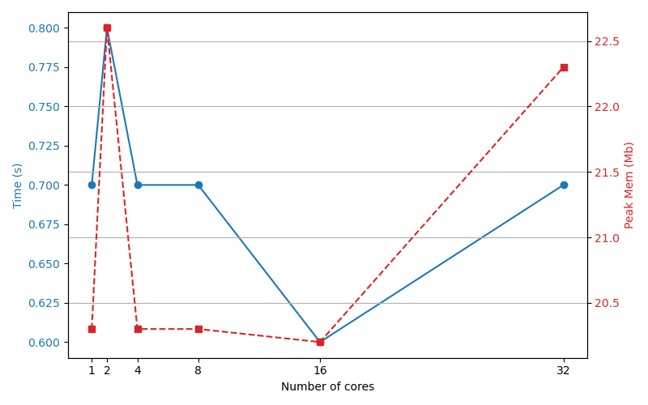
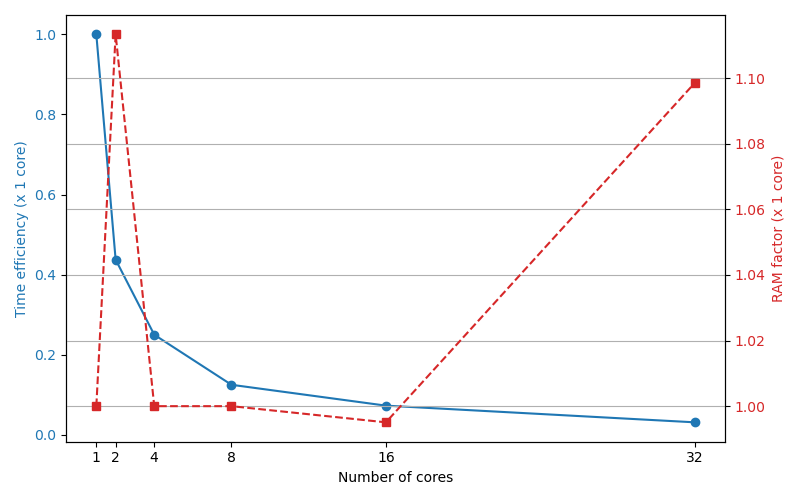
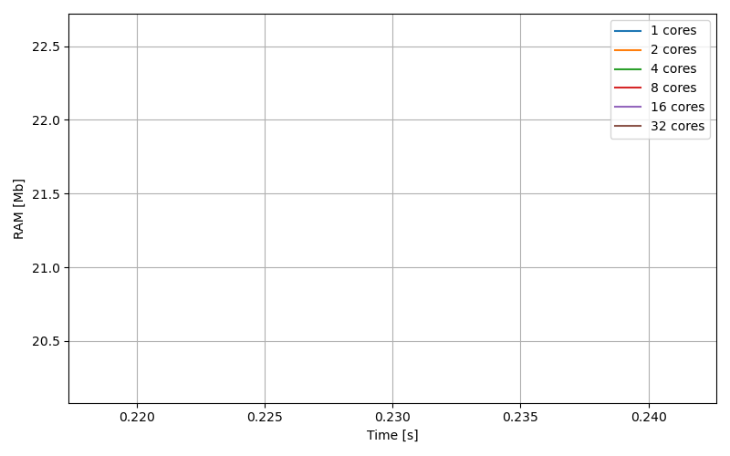
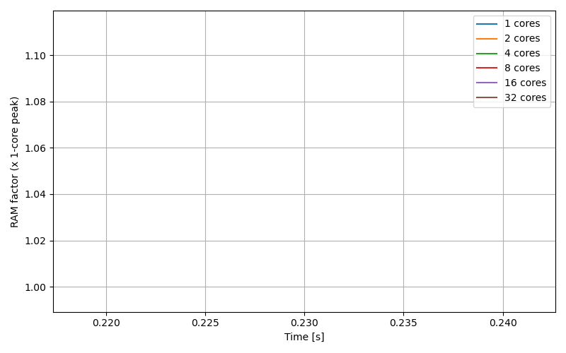
Molecule file for FBr
C 2 2 Y X A
9. 1
F 0.0000000000 0.0000000000 0.0000000000
LARGE BASIS dyall.cv3z
35. 1
Br 0.0000000000 0.0000000000 1.7148710000
LARGE BASIS dyall.cv3z
FINISH
**DIRAC .WAVE FUNCTION .PROPERTIES .4INDEX **INTEGRAL *READIN .UNCONTRACTED **HAMILTONIAN .DOSSSS .X2C *X-AMFI .EAMF **WAVE FUNCTION .SCF .RELCCSD *SCF .ERGCNV 5.0E-9 .MAXITR 100 **PROPERTIES .EFG .NQCC **RELCCSD .ENERGY .GRADIE *CCENER .NOMP2 .NOSDT # without triplets *CCFOPR .CCSDG #.CCSDTG # not implemented yet **MOLTRA .ACTIVE energy -500 5 0.01 **END OF
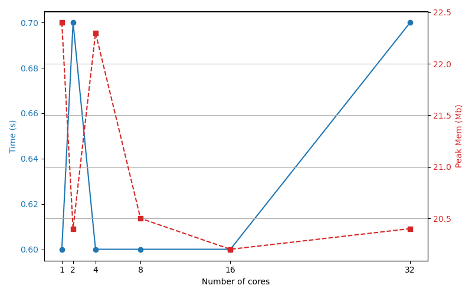
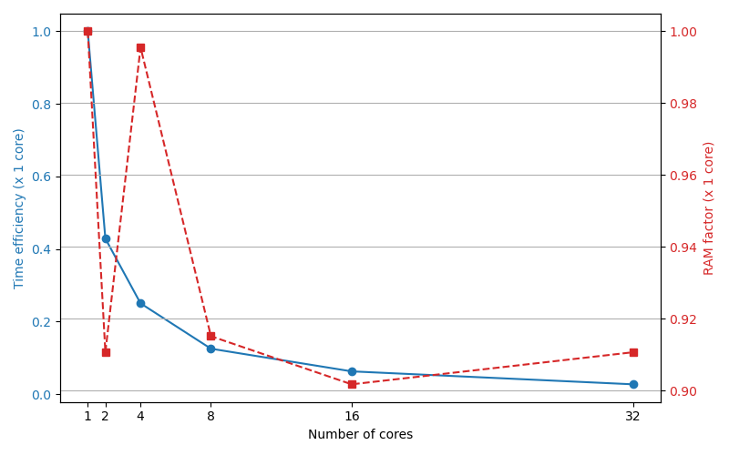
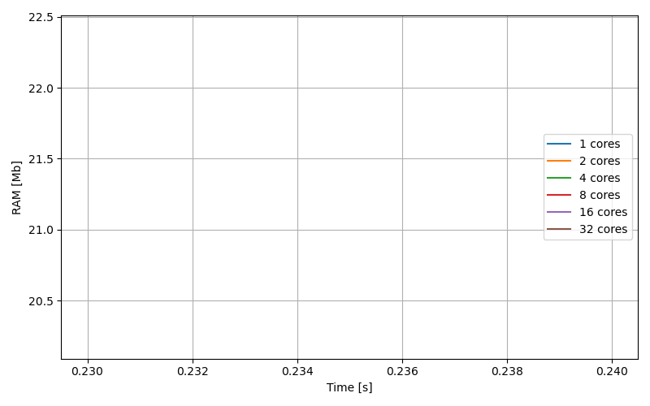
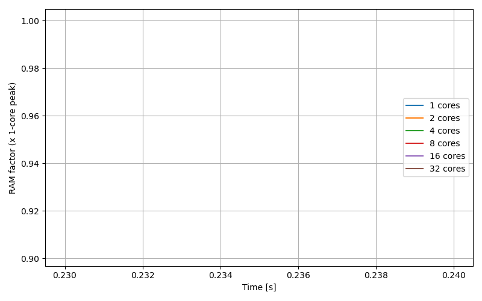
Molecule file for FI
Arbitrary geometry
C 2 2 Y X A
9. 1
F 0.0000000000 0.0000000000 0.0000000000
LARGE BASIS dyall.acv3z
53. 1
I 0.0000000000 0.0000000000 1.9000000000
LARGE BASIS dyall.acv3z
FINISH
**DIRAC .WAVE FUNCTION **HAMILTONIAN .LVCORR **WAVE FUNCTION .SCF *SCF .INTFLG 1 1 0 .ERGCNV 5.0E-9 **END OF
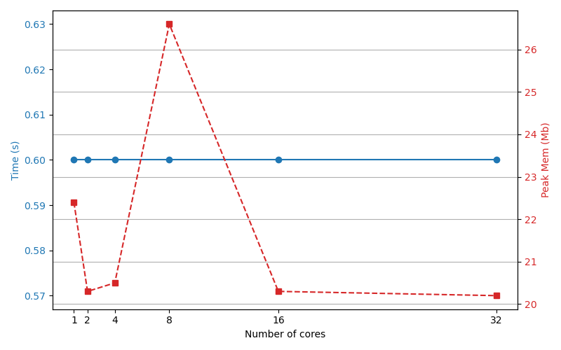
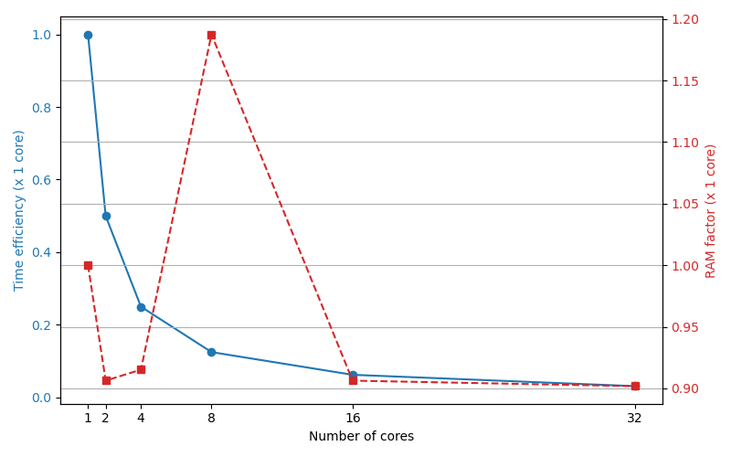
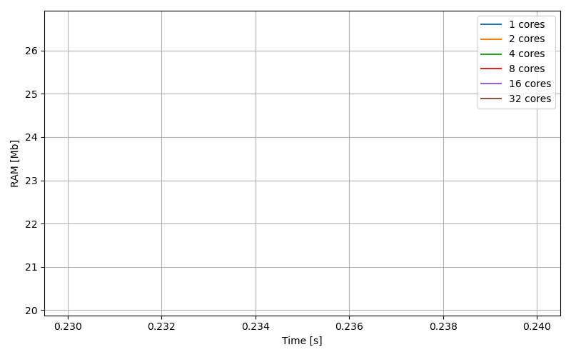
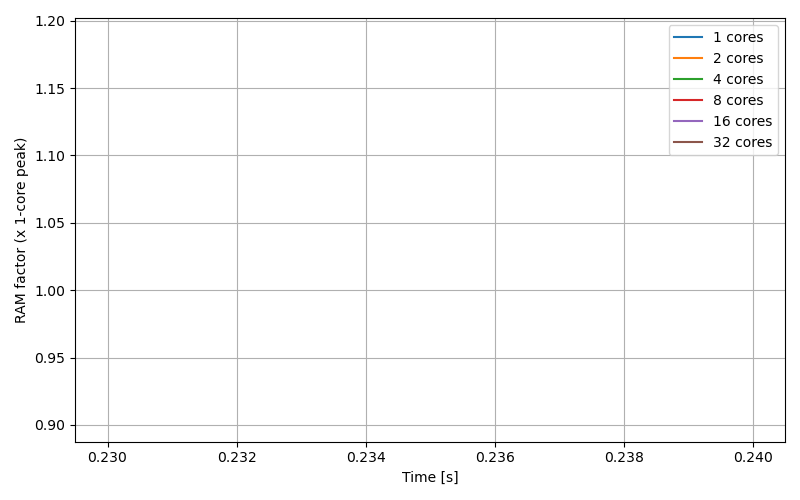
Geometry taken from
Puzzarini manuscript (2007)
C 5 A
6. 1
C 0.0000000000 -0.6595320876 1.5014630716
LARGE BASIS dyall.cv2z
53. 1
I 0.0000000000 0.0236182694 -0.5218162937
LARGE BASIS dyall.cv2z
9. 1
F 0.0000000000 0.3909208978 2.3636086368
LARGE BASIS dyall.cv2z
1. 1
H1 0.9017000085 -1.2451331425 1.6364286512
LARGE BASIS dyall.cv2z
1. 1
H2 -0.9017000085 -1.2451331425 1.6364286512
LARGE BASIS dyall.cv2z
FINISH
**DIRAC .WAVE FUNCTION .PROPERTIES **HAMILTONIAN .URKBAL .INTFLG 1 1 0 **INTEGRALS .NUCMOD 2 *READIN .UNCONTRACT **WAVE FUNCTIONS .SCF *SCF .ERGCNV 5.0E-9 .MAXITR 40 **PROPERTIES .EFG .NQCC *END OF
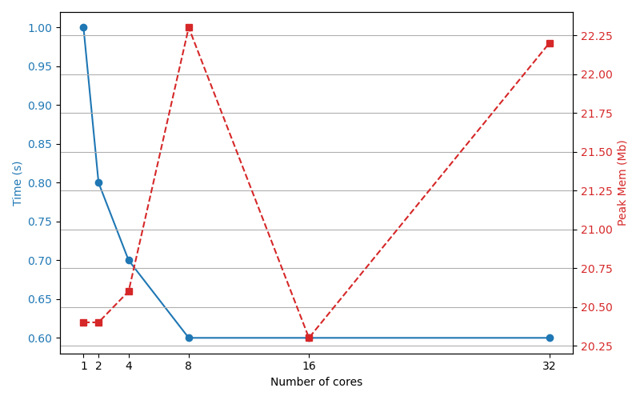
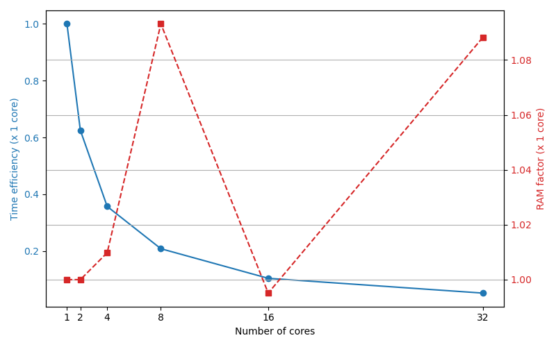
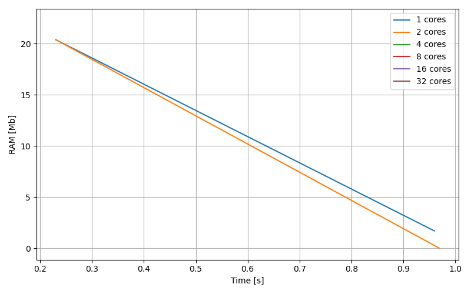
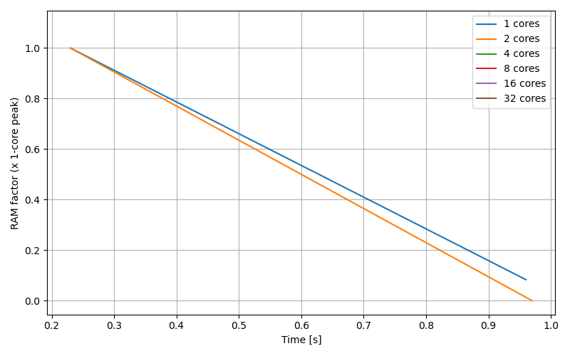
Geometry taken from
Aucar manuscript (2021)
C 2 A
35. 1
Br 0.0000000000 0.0000000000 2.4675320000
LARGE BASIS dyall.v2z
53. 1
I 0.0000000000 0.0000000000 0.0000000000
LARGE BASIS dyall.v2z
FINISH
**DIRAC .TITLE Analytical first-order EFG at CCSD level .WAVE FUNCTION .PROPERTIES .4INDEX **HAMILTONIAN .URKBAL .INTFLG 1 1 0 **INTEGRALS .NUCMOD 2 *READIN .UNCONTRACT **WAVE FUNCTIONS .SCF .RELCCSD *SCF .ERGCNV 5.0E-10 .MAXITR 30 **PROPERTIES .EFG .NQCC **RELCCSD .ENERGY .GRADIENT *CCFOPR .CCSDG **MOLTRA .ACTIVE energy -50000.0 2 0.001 *END OF
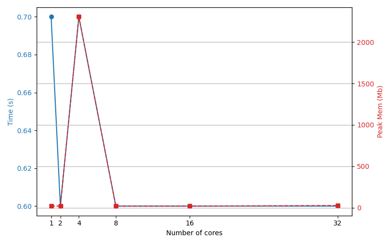
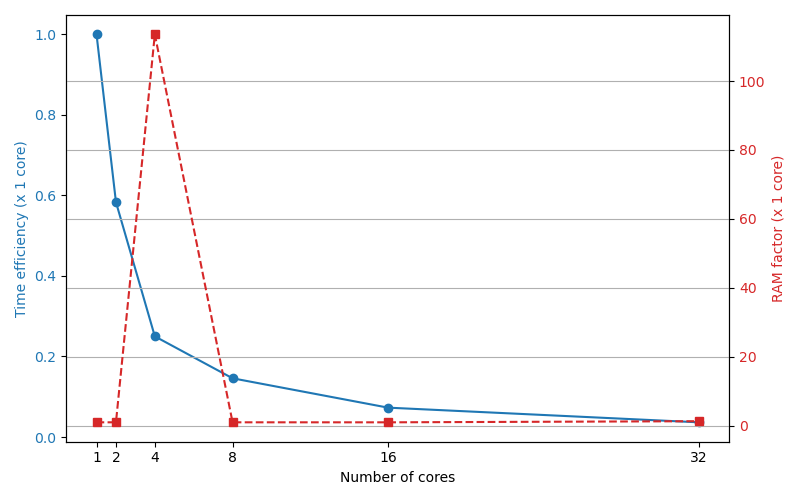
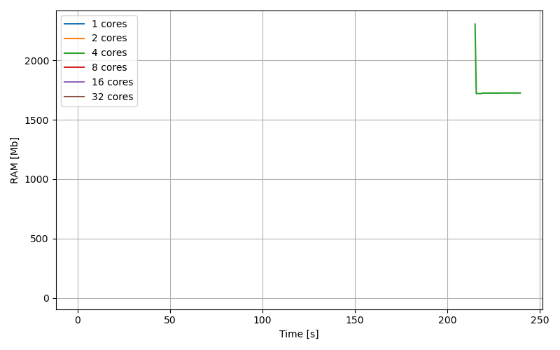
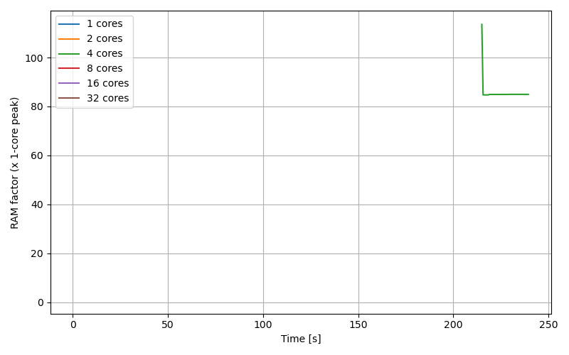
Geometry close to
experimental structure
C 2 0 A
35. 1
Br 0.000 0.000 0.0000
LARGE BASIS dyall.acv2z
1. 1
H 0.000 0.000 1.40
LARGE BASIS dyall.cv2z
FINISH
**DIRAC .TITLE shielding .WAVE FUNCTION .PROPERTIES **HAMILTONIAN .URKBAL .INTFLG 1 1 0 **INTEGRALS .NUCMOD 1 *READIN .UNCONTRACT **WAVE FUNCTIONS .SCF *SCF .INTFLG 1 1 0 .ERGCNV 5.0E-9 **PROPERTIES .SHIELDING *NMR .LONDON *LINEAR RESPONSE .THRESH 1.0D-10 *END OF
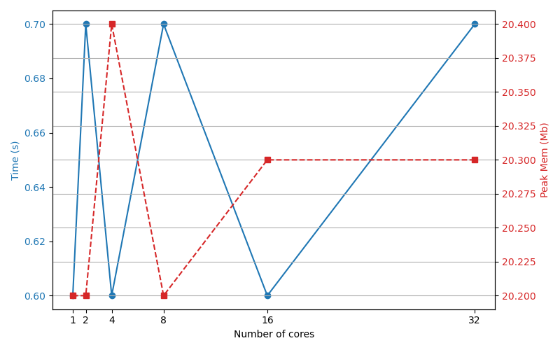
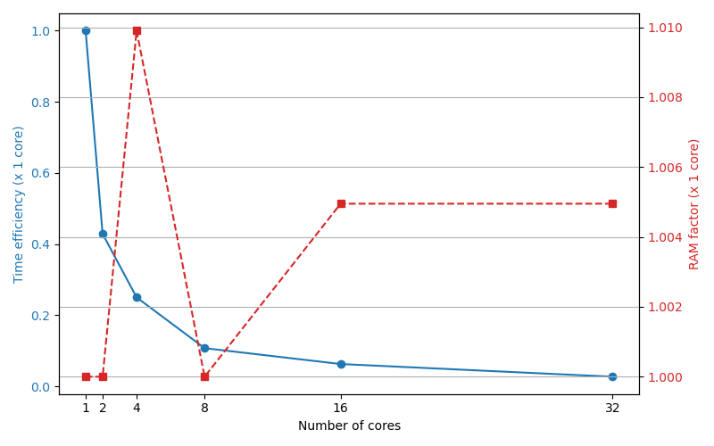
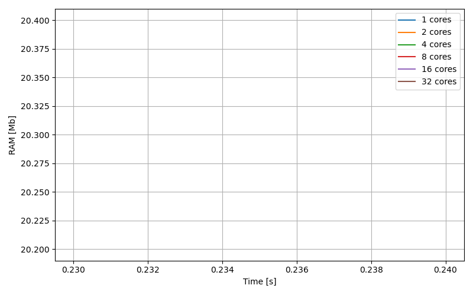
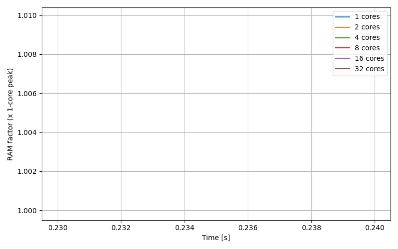
INTGRL
H2O2 Taken (and rotated afterwards) from https://pubchem.ncbi.nlm.nih.gov/compound/Hydrogen-Peroxide
O-O: A -- O-H: A -- Dihedral angle: 45º
C 4 0 A
8.0 1
O 0.72470000 0.00000000 0.00000000 Isotope=17
LARGE BASIS dyall.cv3z
8.0 1
O -0.72470000 0.00000000 0.00000000 Isotope=17
LARGE BASIS dyall.cv3z
1.0 1
H 0.82330000 -0.91374951 -0.31741390
LARGE BASIS dyall.cv3z
1.0 1
H -0.82330000 -0.87058524 0.42168324
LARGE BASIS dyall.cv3z
FINISH
**DIRAC .TITLE PVC to EFG .WAVE FUNCTION .PROPERTIES **HAMILTONIAN .INTFLG 1 1 0 **INTEGRALS #.PROPRI .NUCMOD 2 .SELECT 1 1 *READIN .UNCONTRACT **WAVE FUNCTIONS .SCF *SCF .INTFLG 1 1 0 .ERGCNV 5.0E-10 .MAXITR 100 **PROPERTIES .PVCEFG .PRINT 1 *END OF
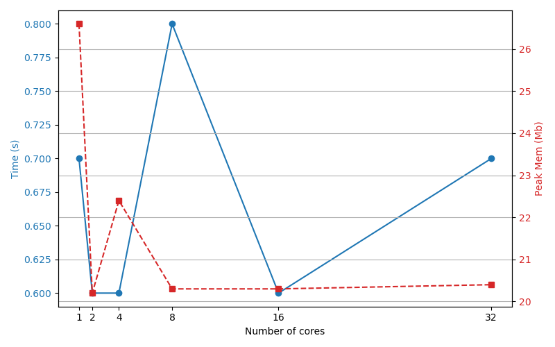
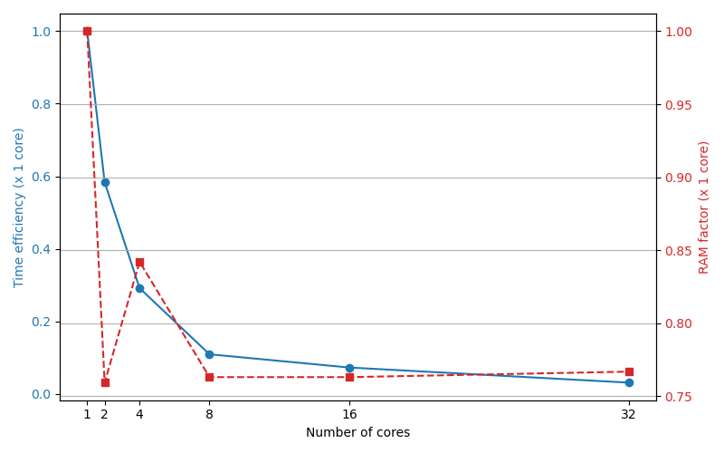
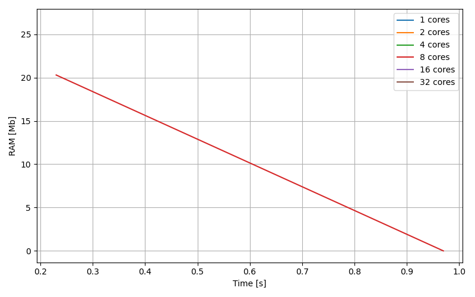
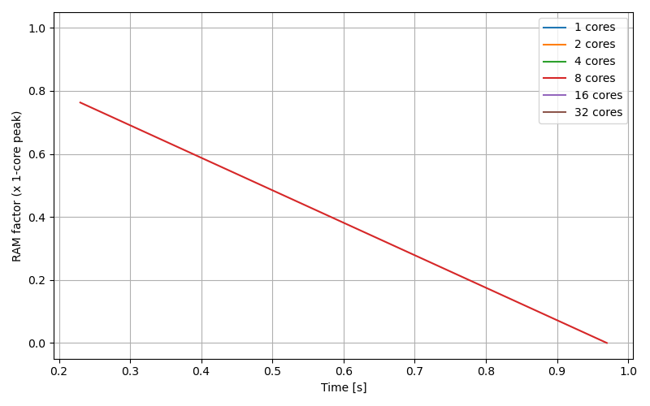
Molecule file for FBr (MP2 test)
C 2 2 Y X A
9. 1
F 0.0000000000 0.0000000000 0.0000000000
LARGE BASIS dyall.cv2z
35. 1
Br 0.0000000000 0.0000000000 1.7148710000
LARGE BASIS dyall.cv2z
FINISH
**DIRAC .WAVE FUNCTION **HAMILTONIAN .LVCORR **WAVE FUNCTIONS .SCF .MP2 *SCF .INTFLG 1 1 0 .ERGCNV 5.0E-9 *MP2CAL .OCCUP 10..22 .VIRTUAL all .IJTSK 2 **END OF
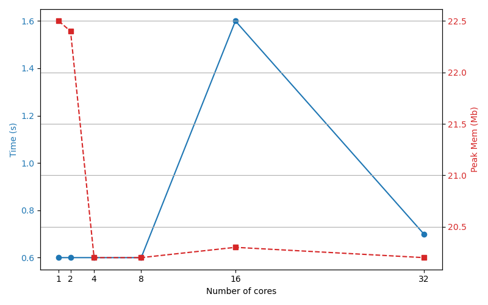
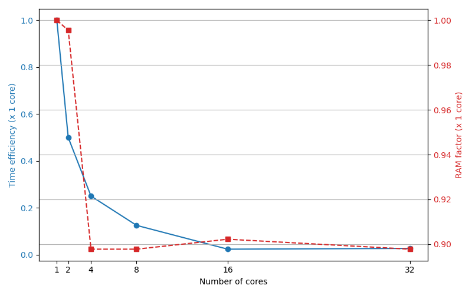
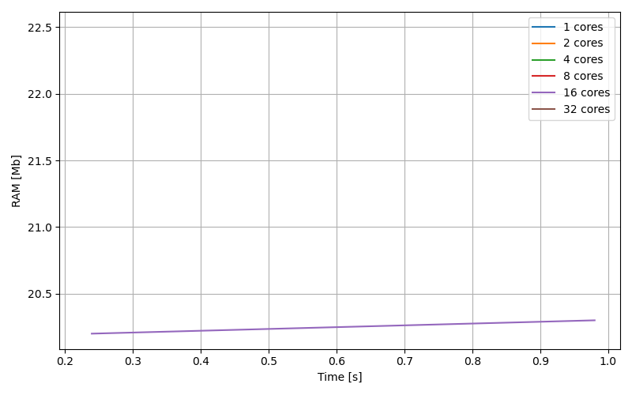
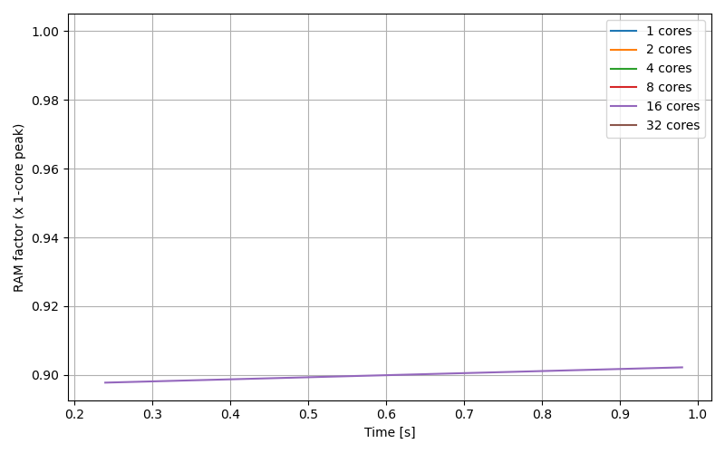
Molecule file for FBr (DFT test)
C 2 2 Y X A
9. 1
F 0.0000000000 0.0000000000 0.0000000000
LARGE BASIS dyall.cv4z
35. 1
Br 0.0000000000 0.0000000000 1.7148710000
LARGE BASIS dyall.cv4z
FINISH
**DIRAC .WAVE FUNCTION **HAMILTONIAN .X2C .DFT PBE0 **WAVE FUNCTION .SCF *SCF .INTFLG 1 1 0 .ERGCNV 5.0E-9 .MAXITR 100 **END OF
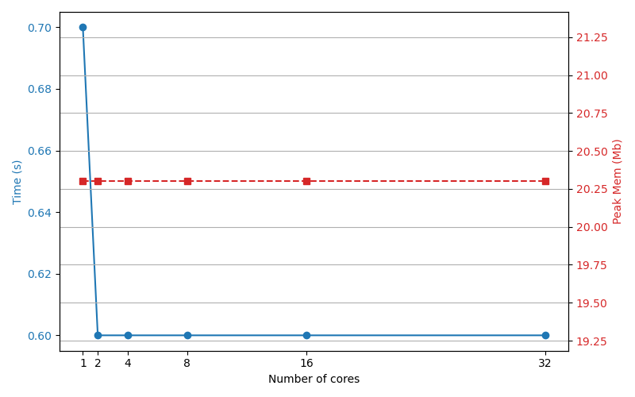
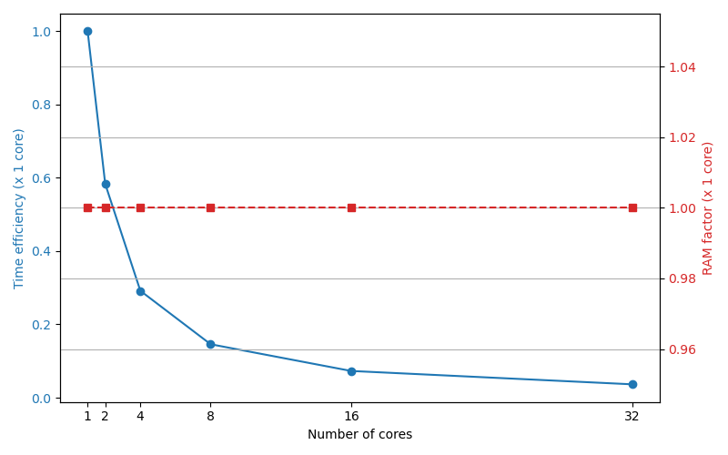
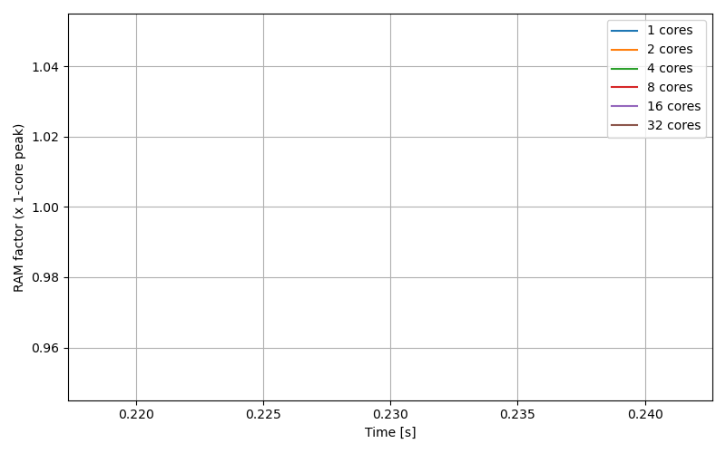
Molecule file for BrO (bromine monoxide radical)
C 2 0 A
35. 1
Br 0.0000000000 0.0000000000 0.0000000000
LARGE BASIS dyall.acv3z
8. 1
O 0.0000000000 0.0000000000 1.7170000000
LARGE BASIS dyall.acv3z
FINISH
**DIRAC .WAVE FUNCTION **HAMILTONIAN .X2C **WAVE FUNCTION .SCF *SCF .CLOSED SHELL 42 .OPEN SHELL 1 1/2 .ERGCNV 5.0E-9 .MAXITR 100 **END OF
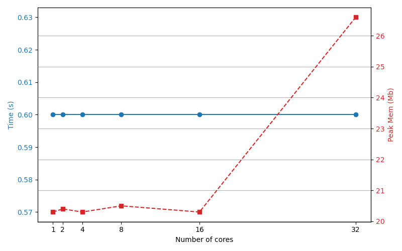
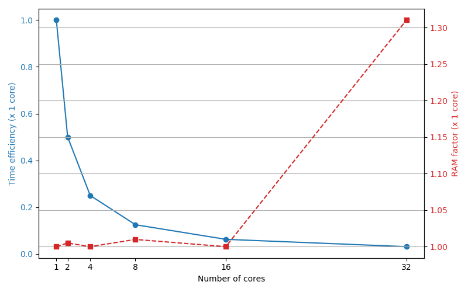
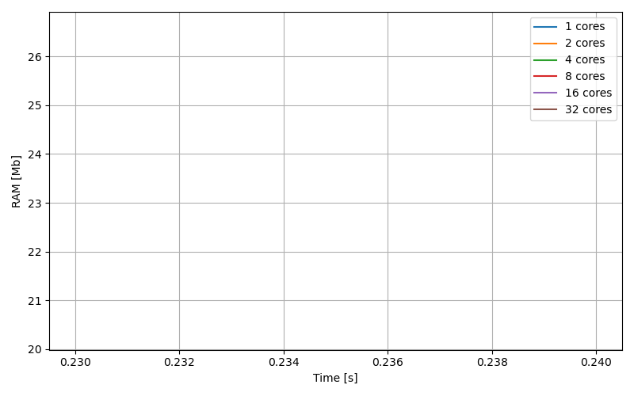
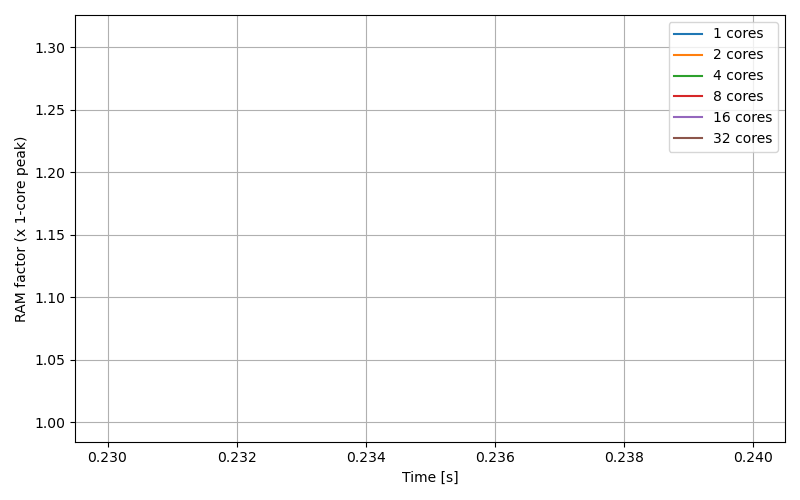